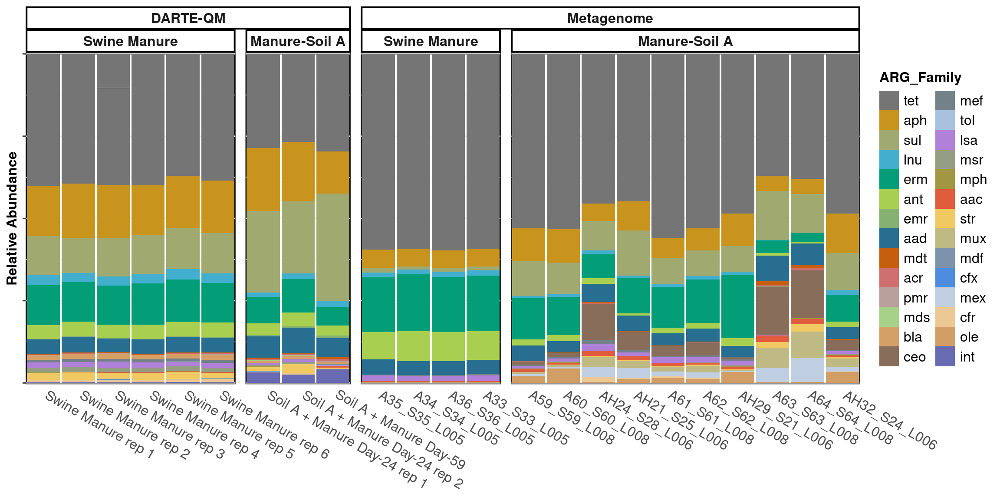
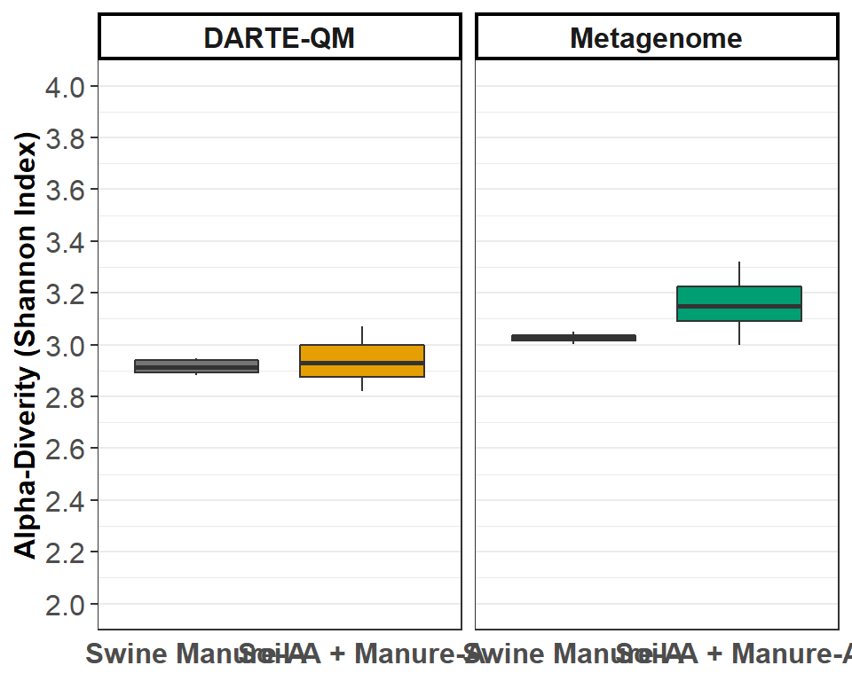
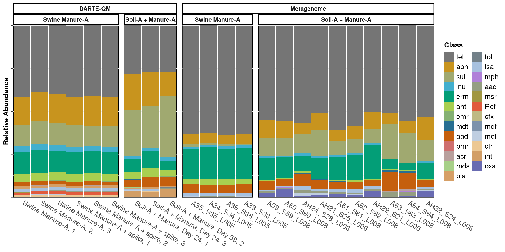
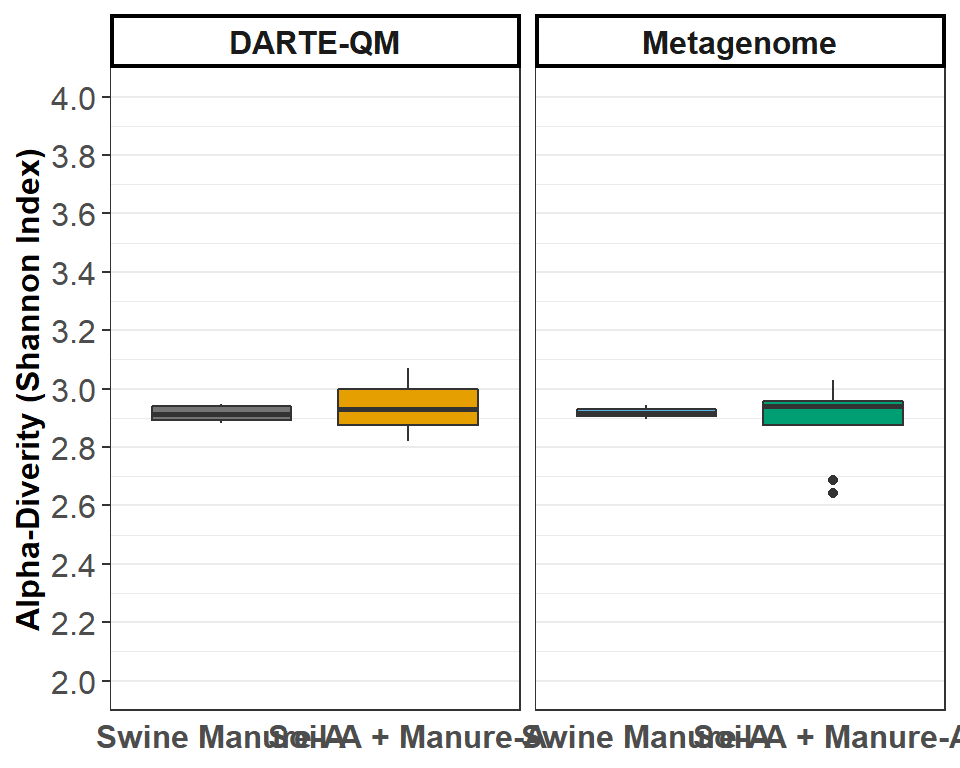

classification <- 'ARG'
treatment_name <- 'Matrix'
missing <- unique(sort(as.character(SC_I$ARG)))
genes <- as.character(SC_I$ARG)
for(i in seq_along(missing)){
genes[genes %in% missing[i]] <- c("AAC(2')-Ib", "AAC(2')-Ie", "AAC(3)-Ib", "AAC(3)-IIc", "AAC(3)-IVa", "AAC(6')-Iae", "AAC(6')-Iak", "AAC(3)-Ib/AAC(6')-Ib''", "AAC(6')-Ib11", "AAC(6')-Ie-APH(2'')-Ia", "AAC(6')-IIa", "AAC(6')-Iid", "AAC(6')-Ip", "ANT(6)-Ia", "aadA1", "aadA11", "aadA13", "aadA14", "aadA15", "aadA16", "aadA22", "aadA24", "aadA25", "aadA3", "aadA5", "aadA6", "aadA7", "aadA8", "aadA9", "ACI-1", "acrA", "acrB", "acrD", "AcrF", "AdeB", "AdeF", "AdeI", "AdeJ", "AIM-1", "AmrA", "AmrB", "ANT(4')-Ib", "ANT(6)-Ia", "ANT(6)-Ib", "ANT(9)-Ia", "APH(2'')-If", "APH(2'')-Ib", "APH(2'')-IIIa", "APH(3'')-Ib", "APH(3')-Ia", "APH(3')-IIa", "APH(3')-IIIa", "APH(3')-VI", "APH(3')-VIa", "APH(3')-XV", "APH(4)-Ia", "APH(6)-Ia", "APH(6)-Ib", "APH(6)-Ic", "APH(6)-Id", "AQU-1", "arnA", "ARR-1", "AxyX", "AxyY", "BcI", "BcII", "bcr-1", "BJP-1", "blaA", "Bla2", "BlaB", "blaF", "blaL1", "BUT-1", "carA", "carB-1", "carB-4", "carB-8", "cat", "cat-TC", "cat", "catB6", "catB8", "catQ", "ceoA", "ceoB", "cfr(C)", "cfxA3", "cfxA6", "clbA", "cml", "cmlV", "cmx", "cpxa", "crp", "CTX-M-63", "CTX-M-75", "dfrA1", "dfrA20", "dfrA21", "dfrB3", "dfrD", "dfrG", "efpA", "efrA", "ereB", "Erm(33)", "Erm(35)", "Erm(36)", "Erm(42)", "Erm(47)", "ErmA", "ErmB", "ErmC", "ErmF", "ErmG", "ErmQ", "ErmT", "ErmX", "ErmY", "EXO-1", "facT", "farA", "FEZ-1", "floR", "FosB", "fusH", "gadX", "GES-23", "gyrA", "ileS", "iri", "JOHN-1", "linG", "lnuA", "lnuB", "lnuC", "lnuD", "lnuF", "lnuG", "LRA-1", "LRA-13", "LRA-19", "LRA-3", "LRA-8", "LRA-9", "lrfA", "lsaB", "lsaC", "lsaE", "macB", "mdsB", "mdsC", "mdtA", "mdtB", "mdtC", "mdtF", "mdtG", "mdtK", "mdtN", "mdtO", "mefA", "mefB", "mefC", "mel", "MexA", "MexB", "MexC", "MexD", "MexE", "MexF", "MexI", "MexK", "MexL", "MexM", "MexN", "MexQ", "MexV", "MexW", "MexX", "MexY", "mgtA", "MOX-9", "mphB", "mphD", "mphG", "mphL", "mprF", "msrA", "msrE", "mtrA", "mtrD", "mupA", "MuxA", "MuxB", "MuxC", "novA", "npmA", "OCH-2", "OCH-6", "OCH-7", "OKP-B-20", "oleB", "oleC", "oleD", "opcM", "OpmB", "OpmE", "OpmH", "OprA", "OprM", "OprN", "OprZ", "optrA", "oqxB", "otrA", "otrB", "otrC", "OXA-114a", "OXA-209", "OXA-22", "OXA-258", "OXA-29", "OXA-347", "OXA-368", "OXA-415", "OXA-60", "OXA-74", "patA", "PDC-75", "PmpM", "pmrE", "qacH", "QepA4", "QnrB12", "RbpA", "rgt1438", "Rm3", "rmtF", "rphA", "rphB", "SAT-1", "SAT-3", "SAT-4", "smeA", "smeB", "smeC", "smeD", "smeE", "smeF", "smeR", "smeS", "spd", "SPG-1", "srmB", "str", "sul1", "sul2", "TaeA", "tap", "tcmA", "tcr3", "TEM-220", "tet(31)", "tet(33)", "tet(39)", "tet(40)", "tet(41)", "tet(42)", "tet(43)", "tet(44)", "tet(45)", "tetA", "tetC", "tetD", "tetG", "tetH", "tetJ", "tetL", "tetV", "tet(W/N/W)", "tetY", "tetZ", "tet(32)", "tet(36)", "tetA(46)", "tetA(P)", "tetB(P)", "tetM", "tetO", "tetQ", "tetS", "tetT", "tetW", "tetX", "tlrC", "TolC", "TriA", "triC", "VanHO", "vanJ", "vanO", "vanRG", "vanRI", "VanRM", "VanRO", "VanSA", "VanSF", "VanSM", "VanSO", "VanTG", "VanXO", "VanXYG", "vatE", "vatH", "vga(A)LC", "vgaB", "vgaE")[i]
}
set(SC_I, j = 'ARG', value = factor(genes, levels = unique(genes)))
graph_data <- melt(read_counts, id.vars = c('ARG_Family', 'ARG', 'Primer'), variable.name = 'Sample_Name')
graph_data <- graph_data[ARG != 'spike']
graph_data <- graph_data[!(ARG %in% c('16S'))]
graph_data <- merge(metadata[,c(1,2,4)], graph_data, by.x = 'ID', by.y = 'Sample_Name')
graph_data <- graph_data[, sum(value), by = c('Sample', 'Matrix', 'ARG_Family', 'ARG', 'Primer')]
set(graph_data, j = classification, value = factor(graph_data[[classification]], levels = c('spike', rev(unique(graph_data[[classification]][!(graph_data[[classification]]=='spike')])))))
setkey(graph_data, "ARG", "Sample")
set(graph_data, which(is.na(graph_data[['Day']])), j='Day', value=0)
graph_data <- rbindlist(list(
cbind(graph_data[,c('Sample', 'ARG', 'ARG_Family', 'Matrix', 'V1')], Tech = 'DARTE-QM'),
cbind(SC_I[,c('Sample', 'ARG', 'ARG_Family', 'Matrix', 'V1')], Tech = 'Metagenome')), fill = TRUE)
graph_data[, relative_abundance := round(V1/sum(V1), 4), by = c('Sample')]
set(graph_data, j = 'Matrix', value = as.character(graph_data$Matrix))
set(graph_data, which(graph_data$Matrix == "manure"), 'Matrix', "Swine Manure-A")
set(graph_data, which(graph_data$Matrix == "effluent"), 'Matrix', "Effluent")
set(graph_data, which(graph_data$Matrix == "Manure-Soil A"), 'Matrix', "Soil-A + Manure-A")
graph_data <- graph_data[!(is.na(relative_abundance))]
graph_data <- graph_data[graph_data$Matrix != 'Effluent',]
graph_data <- graph_data[V1 != 0]
graph_data[, relative_abundance := round(V1/sum(V1), 4), by = c('Sample')]
classification_order <- setorder(graph_data[, lapply(.SD, sum, na.rm=TRUE), by=ARG_Family, .SDcols=c("relative_abundance")], -relative_abundance)
classification_order <- classification_order[round(classification_order[[2]]*100 / length(unique(graph_data[Tech == "DARTE-QM"]$Sample)),1) >= 0.5,]
graph_data <- graph_data[ARG_Family %in% classification_order$ARG_Family]
set(graph_data, j = 'ARG_Family', value = factor(graph_data$ARG_Family, levels = classification_order[[1]]))
missing <- unique(sort(as.character(graph_data[Tech != "DARTE-QM"]$ARG_Family[!(graph_data[Tech != "DARTE-QM"]$ARG_Family %in% graph_data[Tech == "DARTE-QM"]$ARG_Family)])))
setorder(graph_data, 'ARG_Family')
genes <- as.character(graph_data$ARG_Family)
for(i in seq_along(missing)){
genes[genes %in% missing[i]] <- c("ceo", "mex", "mux", "ole", "bla", "rph", "bla", "tlr", "Van")[i]
}
set(graph_data, j = 'ARG_Family', value = factor(genes, levels = unique(genes)))
setkey(graph_data, 'Sample')
set(graph_data, j = 'Matrix', value = factor(graph_data$Matrix, levels = unique(metadata$Matrix)))
graph_data <- graph_data[, lapply(.SD, sum, na.rm=TRUE), by=c('Sample', "ARG", "ARG_Family", 'Matrix', 'Tech'),
.SDcols=c("V1", "relative_abundance") ]
graph_data[, relative_abundance := round(V1/sum(V1), 4), by = c('Sample')]
graph_colors <- schuylR::create_palette(length(unique(graph_data[['ARG_Family']])))
gene_classes <- sort(unique(graph_data[['ARG_Family']]))
compare_data <- graph_data[c(grep('Swine Manure-A', graph_data$Sample), grep('Soil-A', graph_data$Sample), grep('_L0', graph_data$Sample)), ]
compare_data <- compare_data[Matrix %in% c('Swine Manure-A', 'Soil-A + Manure-A')]
set(compare_data, j = 'Sample', value = factor(compare_data[['Sample']], levels = unique(graph_data[['Sample']])))
set(compare_data, j = 'Matrix', value = factor(compare_data[['Matrix']], levels = unique(graph_data[['Matrix']])))
profile_compare <- ggplot(compare_data,
aes_string(x = "Sample",
y = "relative_abundance",
fill = "ARG_Family")) +
guides(fill = guide_legend(ncol = 2)) +
scale_fill_manual(
values = graph_colors[gene_classes[gene_classes %in% unique(compare_data[['ARG_Family']])]],
aesthetics = c("color", "fill")
) +
facet_nested(.~ Tech + Matrix, scales = "free", space = "free") +
geom_bar(stat = "identity", position = "stack",
size = 0.001, width = 0.95, color = 'black') +
ylab("Relative Abundance") +
theme_bw() +
theme(axis.text.x = element_text(size= 12, angle = 330, hjust = -0.05),
axis.text.y = element_blank(),
axis.title.x = element_blank(),
axis.title.y = element_text(size = 12, face = "bold"),
axis.ticks.x = element_blank(),
legend.title = element_text(size = 12, face = "bold"),
legend.text = element_text(size = 12),
legend.spacing.x = unit(0.005, "npc"),
legend.key.size = unit(6, "mm"),
panel.background = element_rect(color = "black", size = 1.5),
panel.spacing = unit(0.01, "npc"),
strip.text.x = element_text(size = 10, face = "bold"),
strip.background = element_rect(colour = "black", size = 1.4, fill = "white"),
panel.grid.major.x = element_blank()) +
scale_y_continuous(expand = expansion(mult = c(0.0037, 0.003), add = c(0, 0))) +
scale_x_discrete(expand = expansion(mult = 0, add = 0.51))
index = "shannon"
colors = "default"
alpha <- compare_data
alpha <- dcast(alpha, ARG ~ Sample, value.var = 'relative_abundance', fun.aggregate = sum)
alpha <- alpha[,-1]
replace_DT_NA(alpha)
alpha <- alpha[,lapply(.SD,function(sample) sample/sum(sample))]
alpha <- -alpha * log(alpha)
alpha <- alpha[,lapply(.SD, sum, na.rm = TRUE)]
samples <- dcast(compare_data, Sample + Tech + Matrix ~ ARG, value.var = 'relative_abundance')
alpha_data <- data.table(Sample = samples$Sample,
Matrix = samples$Matrix,
Tech = samples$Tech,
Alpha = unlist(alpha))
color_count <- length(unique(paste(alpha_data$Tech, alpha_data$Matrix)))
alpha_graph_colors <- schuylR::create_palette(color_count, colors)
div_graph <- ggplot(alpha_data, aes(Matrix, Alpha)) +
geom_boxplot(show.legend = FALSE, fill = alpha_graph_colors) +
theme_bw() +
theme(
axis.text.x = element_text(size = 12, face = "bold"),
axis.text.y = element_text(hjust = 0.95, size = 12),
axis.title.x = element_blank(),
axis.title.y = element_text(size = 12, face = "bold"),
axis.ticks.x = element_blank(),
strip.text.x = element_text(size = 12, face = "bold"),
strip.background = element_rect(colour = "black", size = 1.4, fill = "white"),
panel.grid.major.x = element_blank()) +
labs(y = paste("Alpha-Diverity (", stringr::str_to_title(index),
" Index)", sep = "")) +
facet_nested(.~ Tech, scales = "free", space = "free") +
scale_y_continuous(breaks = seq(2, 4, 0.2), limits = c(2,4))
DARTE-QM had 128 ARGs in Swine Manure-A samples, with an alpha-diversity measured at 3.37.
compared to metagenomes which had 84 ARGs in Swine Manure-A samples, with an alpha-diversity measured at 3.18.
The metagenome found 47 ARGs that were not detected with DARTE-QM.
DARTE-QM had 128 ARGs in Manure-Soil samples, with an alpha-diversity measured at 3.38.
compared to metagenomes which had 139 ARGs in Swine Manure-A samples, with an alpha-diversity measured at 3.4.
The metagenome found 62 ARGs that were not detected with DARTE-QM.
compare_data <- compare_data[ARG %in% classifications$ARG]
compare_data[, relative_abundance := round(V1/sum(V1), 4), by = c('Sample')]
profile_compare <- ggplot(compare_data,
aes_string(x = "Sample",
y = "relative_abundance",
fill = "ARG_Family")) +
guides(fill = guide_legend(ncol = 2)) +
scale_fill_manual(
values = graph_colors[gene_classes[gene_classes %in% unique(compare_data[['ARG_Family']])]],
aesthetics = c("color", "fill")
) +
facet_nested(.~ Tech + Matrix, scales = "free", space = "free") +
geom_bar(stat = "identity", position = "stack",
size = 0.005, width = 0.95, color = 'black') +
ylab("Relative Abundance") +
theme_bw() +
theme(axis.text.x = element_text(size= 12, angle = 330, hjust = -0.05),
axis.text.y = element_blank(),
axis.title.x = element_blank(),
axis.title.y = element_text(size = 12, face = "bold"),
axis.ticks.x = element_blank(),
legend.title = element_text(size = 12, face = "bold"),
legend.text = element_text(size = 12),
legend.spacing.x = unit(0.005, "npc"),
legend.key.size = unit(6, "mm"),
panel.background = element_rect(color = "black", size = 1.5),
panel.spacing = unit(0.01, "npc"),
strip.text.x = element_text(size = 10, face = "bold"),
strip.background = element_rect(colour = "black", size = 1.4, fill = "white"),
panel.grid.major.x = element_blank()) +
scale_y_continuous(expand = expansion(mult = c(0.0037, 0.003), add = c(0, 0))) +
scale_x_discrete(expand = expansion(mult = 0, add = 0.51))
index = "shannon"
colors = "default"
alpha <- compare_data
alpha <- dcast(alpha, ARG ~ Sample, value.var = 'relative_abundance', fun.aggregate = sum)
alpha <- alpha[,-1]
replace_DT_NA(alpha)
alpha <- alpha[,lapply(.SD,function(sample) sample/sum(sample))]
alpha <- -alpha * log(alpha)
alpha <- alpha[,lapply(.SD, sum, na.rm = TRUE)]
samples <- dcast(compare_data, Sample + Tech + Matrix ~ ARG, value.var = 'relative_abundance')
alpha_data <- data.table(Sample = samples$Sample,
Matrix = samples$Matrix,
Tech = samples$Tech,
Alpha = unlist(alpha))
color_count <- length(unique(paste(alpha_data$Tech, alpha_data$Matrix)))
graph_colors <- create_palette(color_count, colors)
div_graph <- ggplot(alpha_data, aes(Matrix, Alpha)) +
geom_boxplot(show.legend = FALSE, fill = graph_colors) +
theme_bw() +
theme(
axis.text.x = element_text(size = 12, face = "bold"),
axis.text.y = element_text(hjust = 0.95, size = 12),
axis.title.x = element_blank(),
axis.title.y = element_text(size = 12, face = "bold"),
axis.ticks.x = element_blank(),
strip.text.x = element_text(size = 12, face = "bold"),
strip.background = element_rect(colour = "black", size = 1.4, fill = "white"),
panel.grid.major.x = element_blank()) +
labs(y = paste("Alpha-Diverity (", stringr::str_to_title(index),
" Index)", sep = "")) +
facet_nested(.~ Tech, scales = "free", space = "free") +
scale_y_continuous(breaks = seq(2, 4, 0.2), limits = c(2,4))
With the ARGs filtered to only include those targeted by DARTE-QM, metagenomes found 73 of the 128 that DARTE-QM found, with an alpha diversity of 3.06. The metagenome technology was able to find 26 ARGs targeted by DARTE-QM that the DARTE-QM primers were unable to successfully capture.
With the ARGs filtered to only include those targeted by DARTE-QM, metagenomes found 106 of the 128, with an alpha diversity of 3.12. The metagenome technology was able to find 44 ARGs targeted by DARTE-QM that the DARTE-QM primers were unable to successfully capture.
Schuyler Smith
Ph.D. Student - Bioinformatics and Computational Biology
Iowa State University. Ames, IA.